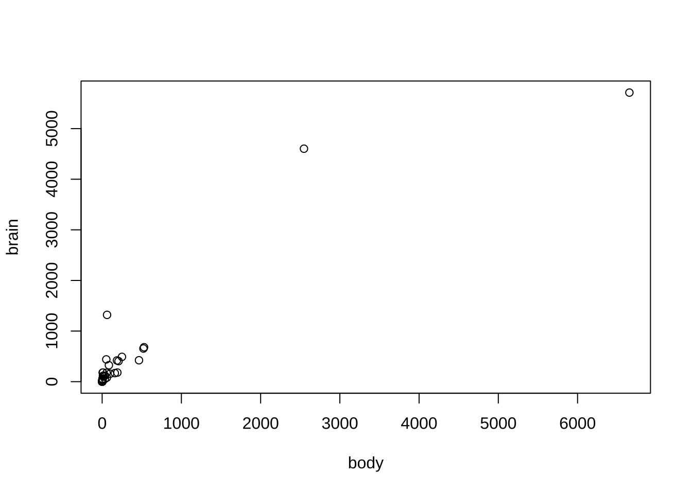
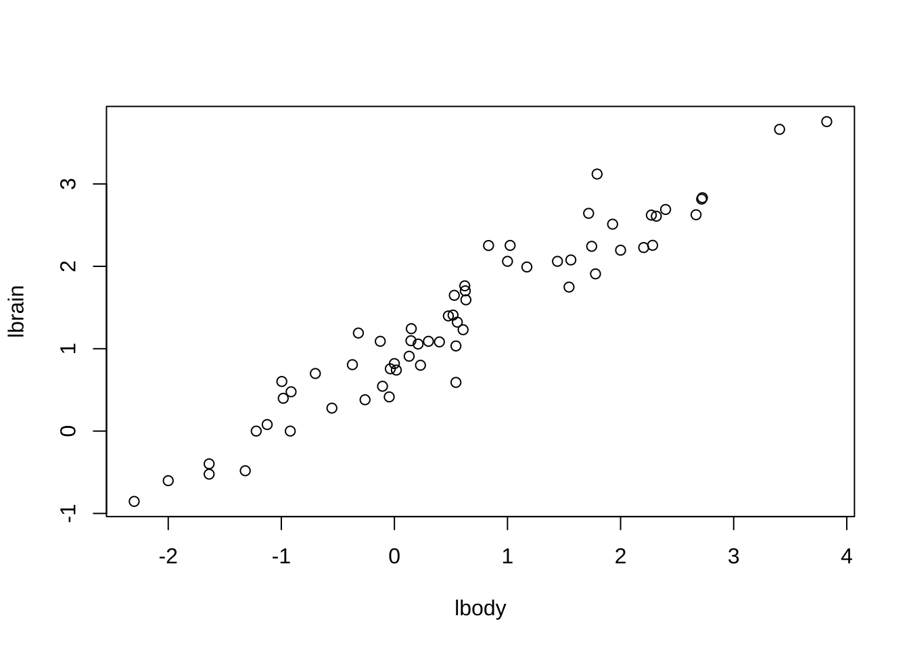
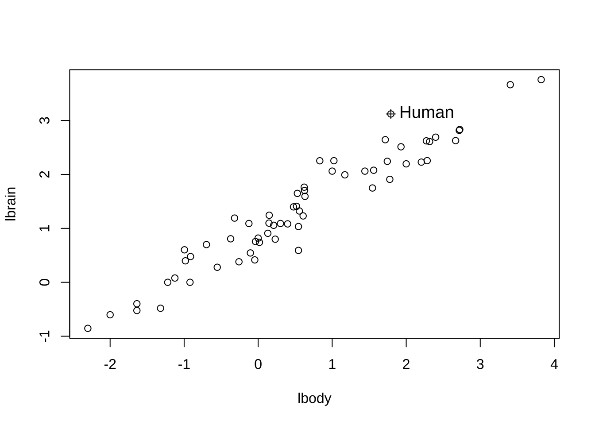
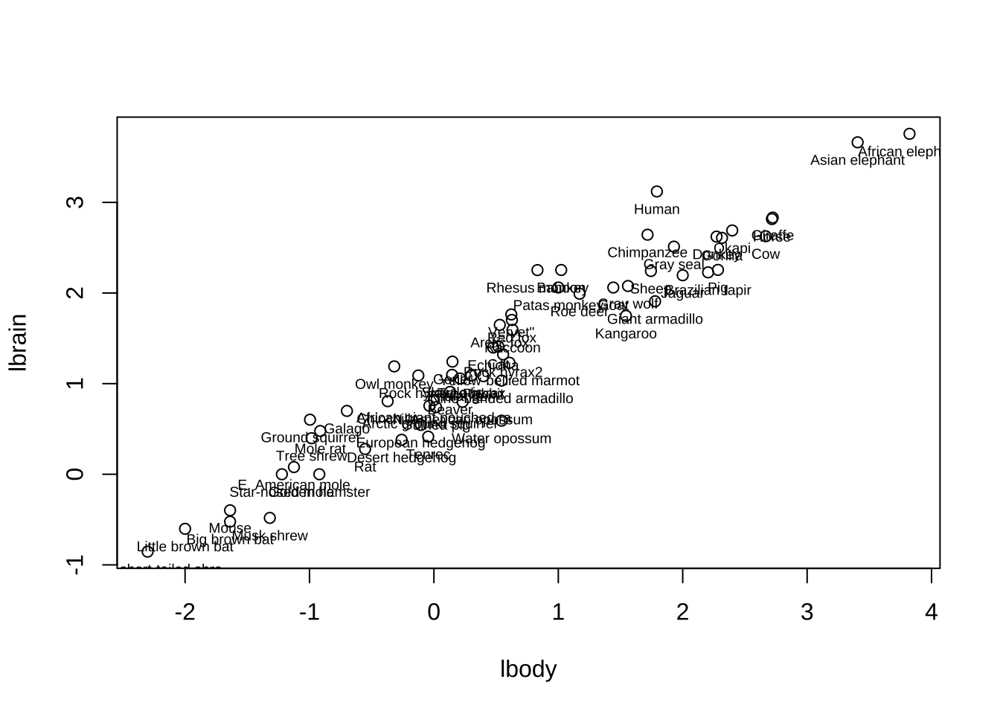

제 1 장 단순회귀 예제
1.1 MAMMAL 자료
이제 교재 109 페이지(연습문제 2.25) 에서 소개된 포유류의 뇌의 무게와 몸무게에 대한 자료 데이터프레임 Mammal를 사용할 수 있다.
head(mammal)## brain body
## Arctic fox 44.500 3.385
## Owl monkey 15.499 0.480
## Beaver 8.100 1.350
## Cow 423.012 464.983
## Gray wolf 119.498 36.328
## Goat 114.996 27.660plot(brain~body, data=mammal) 
1.2 변수의 변환
데이터프레임 Mammal의 두 두 변수를 log10() 함수를 이용하여 변환하고 새로운 변수를 만들자.
mammal$lbrain <- log10(mammal$brain)
mammal$lbody <- log10(mammal$body)
head(mammal)## brain body lbrain lbody
## Arctic fox 44.500 3.385 1.648360 0.5295587
## Owl monkey 15.499 0.480 1.190304 -0.3187588
## Beaver 8.100 1.350 0.908485 0.1303338
## Cow 423.012 464.983 2.626353 2.6674371
## Gray wolf 119.498 36.328 2.077361 1.5602415
## Goat 114.996 27.660 2.060683 1.4418522plot(lbrain~lbody, data=mammal)
1.3 특별한 자료를 찾기
자료에서 최대값과 최소값을 찾고 그 위치를 알아보는 방법은 여러 가지가 있다.
일단 산점도를 그린 후에 마우스를 이용하여 자료의 특성을 알아낼 수 있는 방법이 있다.
이러한 방법은 plot()으로 산범도를 그린 후에 identify()함수를 이용하면 마우스를 이용하여 동물의 이름을 볼수 있다.
plot(lbrain~lbody, data=mammal)
with(mammal, identify(lbody, lbrain, labels = rownames(mammal)))
## integer(0)데이터프레임 mammal에 있는 각 동물의 이름은 rownames() 함수를 통하여 알 수 있다.
rownames(mammal)## [1] "Arctic fox" "Owl monkey" "Beaver" "Cow" "Gray wolf" "Goat" "Roe deer" "Guinea pig" "Vervet\"" "Chinchilla"
## [11] "Ground squirrel" "Arctic ground squirrel" "African giant pouched ra" "Lesser short-tailed shre" "Star-nosed mole" "Nine-banded armadillo" "Tree hyrax" "N. American opossum" "Asian elephant" "Big brown bat"
## [21] "Donkey" "Horse" "European hedgehog" "Patas monkey" "Cat" "Galago" "Genet" "Giraffe" "Gorilla" "Gray seal"
## [31] "Rock hyrax1" "Human" "African elephant" "Water opossum" "Rhesus monkey" "Kangaroo" "Yellow-bellied marmot" "Golden hamster" "Mouse" "Little brown bat"
## [41] "Slow loris" "Okapi" "Rabbit" "Sheep" "Jaguar" "Chimpanzee" "Baboon" "Desert hedgehog" "Giant armadillo" "Rock hyrax2"
## [51] "Raccoon" "Rat" "E. American mole" "Mole rat" "Musk shrew" "Pig" "Echidna" "Brazilian tapir" "Tenrec" "Phalanger"
## [61] "Tree shrew" "Red fox"1.4 자료의 정렬
벡터에 있는 자료들을 크기순으로 정렬하고 싶다면 함수
sort()를 사용한다. 내림차순 정렬이 기본이고 내림차순으로 정렬하려면sort(x, decreasing = TRUE)로 사용한다.또한 벡터에 있는자료가 정렬된 순서(기본은 내림차순)를 구하고 싶으면 함수
order()를 사용한다. 내림차순의 순서를 구하고 싶으면order(x, decreasing = TRUE)를 사용한다.
mammal$body## [1] 3.385 0.480 1.350 464.983 36.328 27.660 14.831 1.040 4.190 0.425 0.101 0.920 1.000 0.005 0.060 3.500 2.000 1.700 2547.070 0.023 187.092 521.026 0.785 10.000 3.300 0.200 1.410 529.006 206.996 85.004 0.750 61.998
## [33] 6654.180 3.500 6.800 34.998 4.050 0.120 0.023 0.010 1.400 250.010 2.500 55.501 100.003 52.159 10.550 0.550 59.997 3.600 4.288 0.280 0.075 0.122 0.048 192.001 3.000 160.004 0.900 1.620 0.104 4.235sort(mammal$body)## [1] 0.005 0.010 0.023 0.023 0.048 0.060 0.075 0.101 0.104 0.120 0.122 0.200 0.280 0.425 0.480 0.550 0.750 0.785 0.900 0.920 1.000 1.040 1.350 1.400 1.410 1.620 1.700 2.000 2.500 3.000 3.300 3.385
## [33] 3.500 3.500 3.600 4.050 4.190 4.235 4.288 6.800 10.000 10.550 14.831 27.660 34.998 36.328 52.159 55.501 59.997 61.998 85.004 100.003 160.004 187.092 192.001 206.996 250.010 464.983 521.026 529.006 2547.070 6654.180order(mammal$body)## [1] 14 40 20 39 55 15 53 11 61 38 54 26 52 10 2 48 31 23 59 12 13 8 3 41 27 60 18 17 43 57 25 1 16 34 50 37 9 62 51 35 24 47 7 6 36 5 46 44 49 32 30 45 58 21 56 29 42 4 22 28 19 33자료의 최대값과 최소값을 구하는 함수는 max()와 min()이다.
max(mammal$lbrain)## [1] 3.756778min(mammal$lbrain)## [1] -0.853872자료의 최대값과 최소값의 순서을 구하는 함수는 which.max()와 which.min()이다.
이러한 함수를 통해서 구해진 순서의 자료에 대한 변수를 모두 볼 수 있다.
which.max(mammal$body)## [1] 33mammal[which.max(mammal$body), ]## brain body lbrain lbody
## African elephant 5711.86 6654.18 3.756778 3.823095which.min(mammal$body)## [1] 14mammal[which.min(mammal$body), ]## brain body lbrain lbody
## Lesser short-tailed shre 0.14 0.005 -0.853872 -2.301031.5 단순회귀모형의 적합
다음과 같은 단순선형모형을 고려하자 \[ y_i = \beta_0 + \beta_1 x_i + \epsilon_i,~~ i=1,2,\dots,n \]
데이터프레임 mammal에서 로그변환된 몸무게 lbody을 독립변수 \(x\)로 하고 로그변환된 뇌무게를 lbrain을 종속변수 \(y\)로 하는 선형회귀직선의 절편과 기울기를 다음과 같이 함수 lm()을 이용하여 추정할 수 있다.
mammal.lm <- lm(lbrain~lbody, data=mammal)
summary(mammal.lm)##
## Call:
## lm(formula = lbrain ~ lbody, data = mammal)
##
## Residuals:
## Min 1Q Median 3Q Max
## -0.74503 -0.21380 -0.02676 0.18934 0.84615
##
## Coefficients:
## Estimate Std. Error t value Pr(>|t|)
## (Intercept) 0.92713 0.04171 22.23 <2e-16 ***
## lbody 0.75169 0.02846 26.41 <2e-16 ***
## ---
## Signif. codes: 0 '***' 0.001 '**' 0.01 '*' 0.05 '.' 0.1 ' ' 1
##
## Residual standard error: 0.3015 on 60 degrees of freedom
## Multiple R-squared: 0.9208, Adjusted R-squared: 0.9195
## F-statistic: 697.4 on 1 and 60 DF, p-value: < 2.2e-161.6 산점도에서 특정 자료의 표시
산점도에 인간 human 자료 \((x_i, y_i)\)를 표시하고 싶으면 다음과 같은 R 코드를 사용할 수 있다. 산점도에 문자를 표시하는 함수 text()를 사용한다.
text(x,y, labels="A", cex=1.0, pos=1 )먼저 사람(Human)에 대한 자료만 선택한다.
pickhuman <- rownames(mammal) == "Human"
pickhuman## [1] FALSE FALSE FALSE FALSE FALSE FALSE FALSE FALSE FALSE FALSE FALSE FALSE FALSE FALSE FALSE FALSE FALSE FALSE FALSE FALSE FALSE FALSE FALSE FALSE FALSE FALSE FALSE FALSE FALSE FALSE FALSE TRUE FALSE FALSE FALSE FALSE FALSE FALSE FALSE FALSE FALSE FALSE FALSE FALSE FALSE FALSE FALSE FALSE FALSE
## [50] FALSE FALSE FALSE FALSE FALSE FALSE FALSE FALSE FALSE FALSE FALSE FALSE FALSEdat1 <- mammal[pickhuman,]
dat1## brain body lbrain lbody
## Human 1320.02 61.998 3.120581 1.792378함수 points() 는 지정된 좌표\((x,y)\)에 기호를 표시하며 기호의 종류는 pch=를 이용하여 숫자로 기호의 종류를 지정한다. 예를 들어 pch=3는 + 를 나타낸다.
함수text()에서 지정된 좌표\((x,y)\)에 문자로 표시를 하며 labels=는 산점도에 표시할 문자열을 지정하고 cex=은 문자의 크기, pos=은 표시할 위치를 지정한다.
plot(lbrain~lbody, data=mammal)
with(dat1, points(lbody,lbrain, pch=3))
with(dat1, text(lbody,lbrain, labels =rownames(dat1), cex=1.2, pos = 4))
위의 코드를 이용하면 다음과 같이 모든 자료의 이름을 표시할 수 있지만 읽기 힘든 그림이다.
plot(lbrain~lbody, data=mammal)
with(mammal, text(lbody,lbrain, labels =rownames(mammal), cex=0.6, pos = 1))